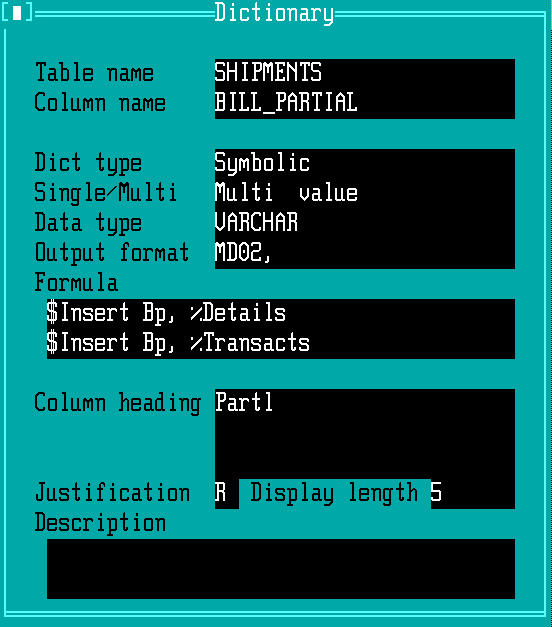
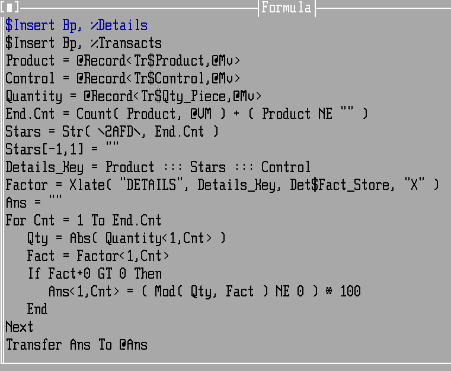
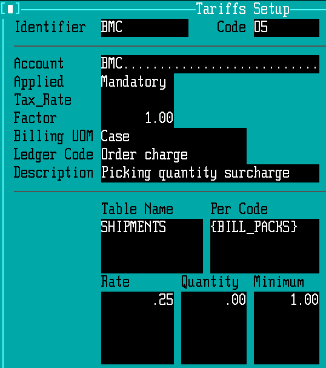

Mandatory Picking Charge¶
DOS WARES does not seem to have a way to calculate number of separate cases or packages picked when shipping both full pallets and picked cases. Similarly, there is not an obvious way to automate the calculation and billing of case picking fees.
BUT! WARES has very flexible programming which allows the calculation and billing of case picking to be added quite simply. Just follow this guide.
Adding Case Pick Quantity¶
Adding the case pick quantity for billing means adding a symbolic entry to the shipments dictionary. Here is how:
Go to menu selection Tools ‣ Reports ‣ Dictionary Edit.
Enter Table name = SHIPMENTS and Column name = BILL_PARTIAL. A record will display as shown following:
:keyboard:`up-arrow` to the Column name, and enter the new name BILL_PACKS. The window will clear to create a new dictionary item.
Press :keyboard:`Alt-C` to copy the previous information into the new entry for BILL_PACKS.
Press :keyboard:`Enter` until the cursor is in the Formula entry. Press function key :keyboard:`F3` to expand the formula for editing. The original formula will display:
Use the mouse or arrow keys to move around the edit window, and change the last four lines to read as shown highlighted in the following image:

Tip
If you accidentally press :keyboard:`Enter`, place the cursor on the resulting blank line and press :keyboard:`Ctrl-D` to remove the line.
Press keys :keyboard:`F9` and :keyboard:`Esc` to save the changed formula and exit the edit subwindow.
Change the Column heading = Packs for the new dictionary, then press :keyboard:`F9` to save the entry.
Verify the Dictionary Entry¶
Enter the Column name BILL_PACKS again and press :keyboard:`Enter` to redisplay the Dictionary entry. Enter to the Formula, press :keyboard:`F3` to display the formula and read the changes to verify them. If everything is good, press :keyboard:`Esc Esc` to exit the dictionary window.
Adding Case Pick Billing¶
Display the window at Billing ‣ Tariffs Setup.
Enter a new tariff Identifier and Code to start a new rate, Applied Mandatory.
On the new rate record, enter the Table Name and Per Code exactly as shown in the following image:
Complete the Rate, Quantity, and Minimum Fields and press :keyboard:`F9` to save the new rate.
Verifying Case Pick Billing¶
As with any mandatory charge, go to the Entry ‣ Shipments window, and enter or display a shipment record which will require this charge. The shipment must be saved with Status 2 or 3.
- Change the shipment record Status to 4, press :keyboard:`F9`.
- Press :keyboard:`Alt-O, Enter` to redisplay the record, and then press :keyboard:`F3` to bring up the charges.
- Check that the case picking charge is on the list of calculated charges.
- Press :keyboard:`Esc` to remove the charges subwindow, then change the Status back to 2 or 3 and save the record again to restore the state of the shipment.